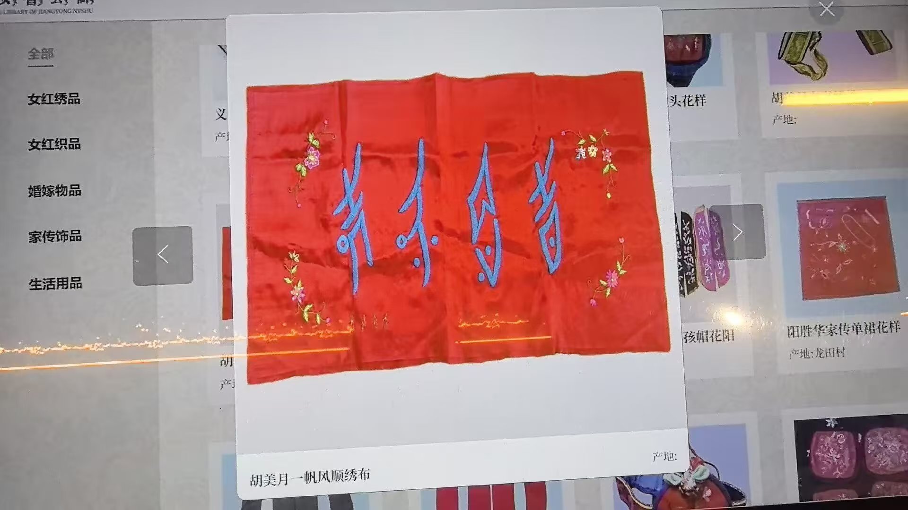

照片资料 · 原图与文字整理
女书绣品 · 一帆风顺绣布
屏幕条目标注“胡美月一帆风顺绣布”，红色织物配蓝色女书字形与花卉刺绣。


文字整理仅覆盖可辨识内容，局部细节请以原图为准。
文字整理与阅读说明
照片可辨识信息
屏幕弹窗左下角的条目名称为“胡美月一帆风顺绣布”。图中红色织物上有四个蓝色女书字形，周围饰有花卉刺绣。名称与人物信息来自屏幕条目标注。
观察重点
可对照原图观察女书字形的斜长结构、蓝红配色，以及文字和花卉纹样在织物上的布局。页面左侧可见女红绣品、女红织品、婚嫁物品、家传饰品、生活用品等分类。
信息边界
当前弹窗“产地”栏没有可确认的值，背景其他展品的产地不应移用于本件。本条不补写尺寸、年代、织物材质或馆藏编号；也不根据“一帆风顺”的条目名，自行建立四个手写字形与汉字或计算机字符的一一对应。